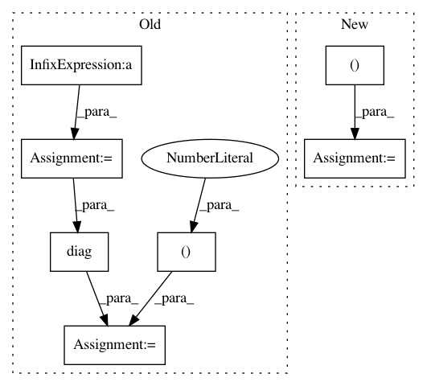

979b8c9efa551e8c948a4aca145367a2d87ac8d6,test/distributions/test_multitask_multivariate_normal.py,TestMultiTaskMultivariateNormal,test_multivariate_normal_correlated_sampels,#TestMultiTaskMultivariateNormal#Any#,112
Before Change
def test_multivariate_normal_correlated_sampels(self, cuda=False):
device = torch.device("cuda") if cuda else torch.device("cpu")
mean = torch.tensor([[0, 1], [2, 3]], dtype=torch.float, device=device)
variance = 1 + torch.arange(4, dtype=torch.float, device=device)
covmat = torch.diag(variance)
mtmvn = MultitaskMultivariateNormal(mean=mean, covariance_matrix=covmat)
base_samples = mtmvn.get_base_samples(torch.Size((3, 4)))
self.assertTrue(mtmvn.sample(base_samples=base_samples).shape == torch.Size([3, 4, 2, 2]))
base_samples = mtmvn.get_base_samples()
self.assertTrue(mtmvn.sample(base_samples=base_samples).shape == torch.Size([2, 2]))
After Change
def test_multivariate_normal_correlated_sampels(self, cuda=False):
device = torch.device("cuda") if cuda else torch.device("cpu")
for dtype in (torch.float, torch.double):
mean = torch.tensor([[0, 1], [2, 3]], dtype=dtype, device=device)
variance = torch.tensor([[1, 2], [3, 4]], dtype=dtype, device=device)
covmat = variance.view(-1).diag()
mtmvn = MultitaskMultivariateNormal(mean=mean, covariance_matrix=covmat)
base_samples = mtmvn.get_base_samples(torch.Size([3, 4]))
self.assertTrue(mtmvn.sample(base_samples=base_samples).shape == torch.Size([3, 4, 2, 2]))
base_samples = mtmvn.get_base_samples()
self.assertTrue(mtmvn.sample(base_samples=base_samples).shape == torch.Size([2, 2]))
def test_multivariate_normal_correlated_sampels_cuda(self):
if torch.cuda.is_available():
with least_used_cuda_device():
self.test_multivariate_normal_correlated_sampels(cuda=True)
In pattern: SUPERPATTERN
Frequency: 3
Non-data size: 7
Instances
Project Name: cornellius-gp/gpytorch
Commit Name: 979b8c9efa551e8c948a4aca145367a2d87ac8d6
Time: 2019-02-26
Author: balandat@fb.com
File Name: test/distributions/test_multitask_multivariate_normal.py
Class Name: TestMultiTaskMultivariateNormal
Method Name: test_multivariate_normal_correlated_sampels
Project Name: pymc-devs/pymc3
Commit Name: d6a2e55cea7640cf6ab1250bbaba66dd79a7ee85
Time: 2017-09-02
Author: maxim.v.kochurov@gmail.com
File Name: pymc3/theanof.py
Class Name: BatchedDiag
Method Name: perform
Project Name: dPys/PyNets
Commit Name: b9e5bdd6e23ee782268b7f36e68fe23dd3bba4c5
Time: 2019-07-28
Author: dpisner@utexas.edu
File Name: pynets/registration/reg_utils.py
Class Name:
Method Name: match_target_vox_res